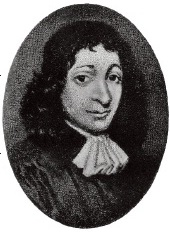

Baruch Spinoza (1632-1677), İspanya’dan sürülmeden önce dinlerini gizlice yaşayan Yahudilerden oluşan Marranos topluluğunun bir üyesi olarak dünyaya geldi. 1656’da Yahudi topluluğundan aforoz edildi ve sonraları ismini daha Latin olan, genelde o şekilde seslenilmesini tercih ettiği Benedict olarak değiştirdi.

Yaşamı sırasında ve sonrasında, Spinoza’nın fikirleri derin bir şekilde ikilik içindeydi. 1670’de tüm yazılanlar gibi kutsal kitabın da Tanrı tarafından değil insanoğlu tarafından üretilen bir belge olarak yorumlanması gerektiğini tartıştığı “Teolojik-Politik İncelemeler” kitabı yayımladı. Spinoza, dinin gerçek içeriğinin Tanrı’nın doğasını ilgilendirmediğini, daha ziyade hikâyeler ve meseller yoluyla ahlaken doğru olanı yapmak için insanlara rehberlik ettiğini iddia etti. Böylece din, ahlaki ve siyasi kontrolün bir sistemidir ve tüm dinler, olabildiği kadar bu görevi etkin bir şekilde yerine getirmelerinden dolayı eşit ölçüde geçerlidir. Bu görüşler, Spinoza’nın kitabı isimsiz bastığı 17. yüzyıl Avrupa’sında oldukça tartışmalıydı.
Spinoza’nın felsefi çalışmalarının çoğuna, Lahey’deki ölümünün hemen ardından 1677’de basılan şaheseri Etik kitabında yer verilmiştir. Bu kitapta Spinoza, Tanrı’nın, doğanın, aklın ve mutluluğa erişmenin sistematik bir açıklamasını sundu. Spinoza için doğadaki her şey, katı ve gerekli nedensellik yasası ile yönetilir. Bu nedenle, her şey gereken yasaların gerekli bir sonucudur ve hiçbir şey olduğu şekilden başka türlü olamazdı. Spinoza, Tanrı’nın sadece doğanın toplamından oluştuğuna, bağımsız bir yaratıcı olmadığına inandı. Dünyaya dair bir anlam veya amaç olmadığı sonucuna vardı. Son kitabı “Etik”te Spinoza bu sonuca ulaşırken nasıl halen mutlu olabileceğimiz üzerine yazdı.
Hayatının çoğunu bir mercek camcısı olarak geçiren Spinoza, 1677’de Lahey’de öldü.
EK BİLGİLER:
1. Kesin olarak bilmememize rağmen Spinoza, muhtemelen ruhun ölümsüz olduğunu ve Tanrı’nın dünyayı bir amaç için yarattığını inkâr etmesinden dolayı aforoz edilmişti.
2. Spinoza, mutluluk haline “salt mutluluk” adını verdi.